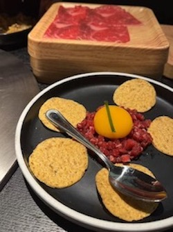
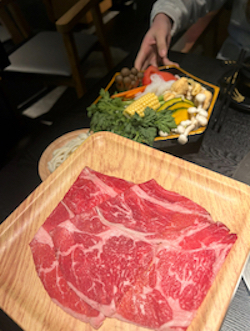
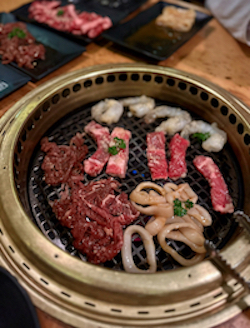
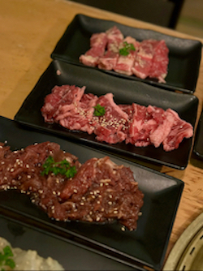
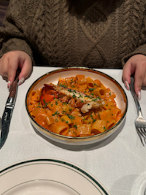
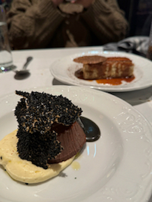

The time now is:
Mikiya's BEST dishes
Beef tartare
Mikiya's beef tartare is an amazing dish. It comes in tender small cubes, with a raw egg yolk and original flavour corn chips. It is the perfect starter of a meal!
Wagyu beef
Mikiya has Wagyu beef of all kinds, including Japanese A5 Wagyu chunk ribeye, A5 Wagyu shoulder cut, A5 brisket, full blood M9+ Australian Wagyu chuck ribeye, Australian Wagyu shoulder cut, seasonal seafood and vegetable platter, and a lot more waiting for you to explore! It's important to note that A5 Wagyu is the best type of beef you can get in a Japanese dish! Including but not limited to Wagyu beef, all the meat is super fresh and tender. This will be your best Wagyu feast in Boston!
Gyu-Kaku's BEST dishes
Umakara Ribeye
Gyu-Kaku's Umakara ribeye is served with beef sliced into even pieces they help you to cook. The beef is pre-marinated with house-made sweet and spicy Umakara sauce, making the beef rich in taste. Gyu-Kaku's ribeye’s beefy and buttery texture is a real treat to all beef lovers!
New York Steak
Gyu-Kaku's New York Steak is one of the customer's favorite dishes to order. There are 2 flavors to choose from, garlic marinated or miso marinated. Both flavours are delicious. The steak is always tender, juicy, and flavorful. You can also control the doneness by yourself!
Geppetto's BEST dishes
Lobster Rigatoni
The Lobster Rigatoni is a luxurious delight—tender lobster pieces nestled in perfectly cooked pasta, all coated in a rich, creamy sauce with just the right touch of seasoning. It's indulgent without being overwhelming, offering a satisfying balance of flavor and texture. A must-try for seafood and pasta lovers alike!
Chocolate torte
The Chocolate Torte is pure decadence—rich, dense, and intensely chocolaty with a velvety texture that melts in your mouth. Its bittersweet flavor is perfectly balanced, especially when paired with a dollop of whipped cream or fresh berries. A heavenly treat for anyone craving a sophisticated, indulgent dessert experience.